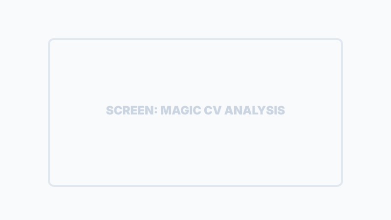
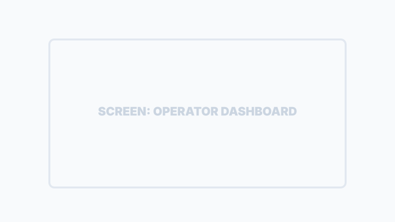
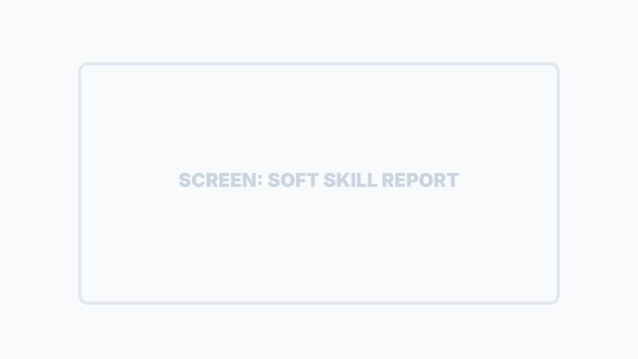

Gestione Operativa del Team
SiTeBoS permette di estendere l'intelligenza aziendale ai tuoi collaboratori, garantendo che ogni missione sia eseguita secondo i protocolli (SOP) e monitorata in tempo reale.
Onboarding Operatori
Puoi invitare nuovi membri del team semplicemente condividendo un link di attivazione. Il processo di registrazione è potenziato dall'IA.
Magic CV Analysis
L'operatore carica il proprio CV: l'IA lo analizza istantaneamente per compilare il profilo professionale e mappare le esperienze precedenti.
Verifica Skill
Estrazione automatica delle competenze tecniche certificate, utilizzate dal sistema per suggerire l'operatore più adatto a ogni Job.

Dashboard Operatore
Ogni collaboratore ha accesso a una console di comando mobile-first da cui gestisce l'intera giornata lavorativa.

-
Missioni (Tasks)
Elenco dei lavori assegnati, filtrabili per urgenza e stato di avanzamento.
-
Agenda Intelligente
Pianificazione degli impegni con supporto OCR per digitalizzare agende cartacee.
-
Ottimizzatore Percorsi
Motore AI per calcolare il percorso logistico ottimale tra le diverse tappe della giornata.

Logistica & Operazioni
Il modulo di Logistica gestisce la pianificazione temporale e operativa delle missioni.
Soft Skill Assessment
Un test psicometrico integrato (150 scenari) permette di mappare le attitudini comportamentali del team (Leadership, Problem Solving, Empatia).
Vantaggio Strategico
"Permette al titolare di assegnare la missione giusta alla persona giusta, riducendo gli errori di gestione e aumentando la soddisfazione del cliente."
